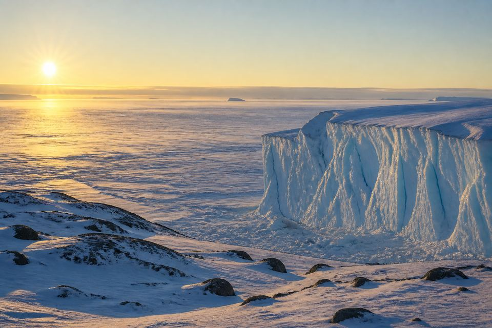
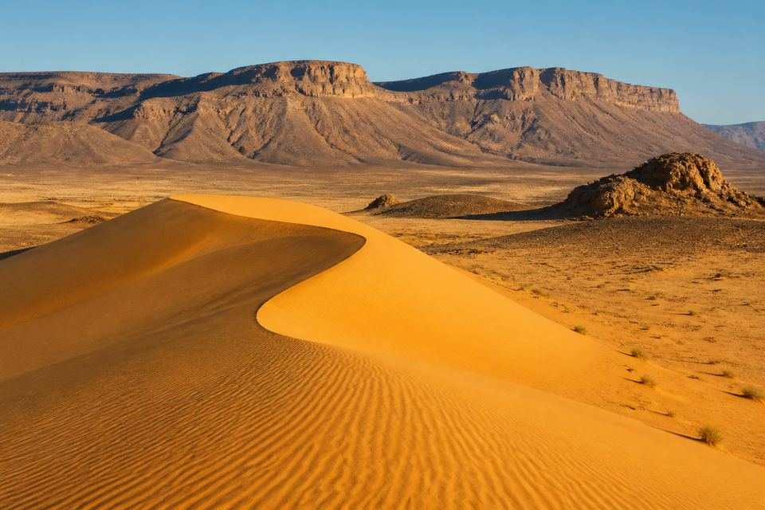
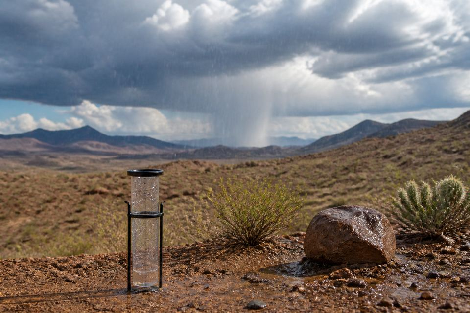
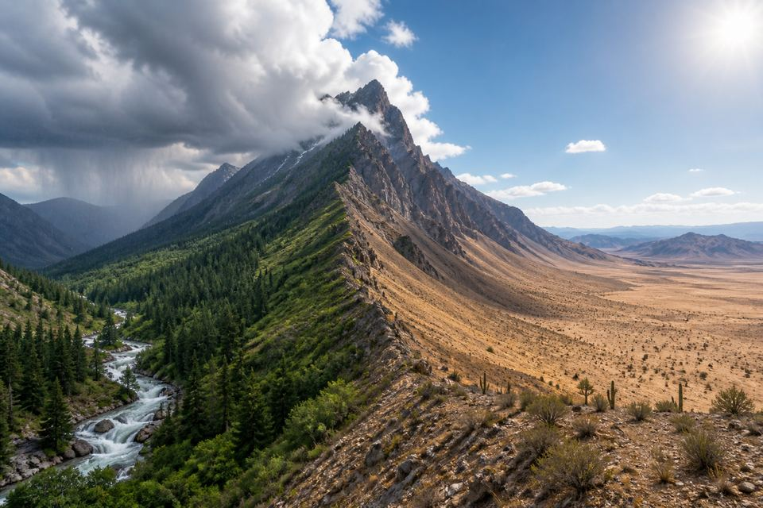

desert
沙漠
S-Class 野外科学日志 · Britannica · Lexile ~600 · 小学五年级
Chapter 01 · Observe
每个词都用真实、达意的科学图像呈现。观察地貌，拼读词形，再用完整句子记录发现。
沙漠
Chapter 02 · Discovery log
9 条观察记录涵盖干燥定义、极地冰盖、热沙漠与雨影，语言难度约蓝思 600。
Chapter 03 · Evidence
沙漠不只有热沙子。用证据理解极地沙漠、降雨标准与雨影。

按降雨量定义，南极冰盖是地球最大的沙漠。它很冷，几乎不下雨。

撒哈拉覆盖非洲北部大片地区。它是最大的热沙漠，但不是地球上最大的沙漠。

许多科学家说，真正的沙漠一年降雨约 25 厘米或更少。

湿空气爬上高山后变干。山的另一侧可能变得干燥，形成雨影沙漠。
| # | Desert | 沙漠 | Area (km²) | Type |
|---|
Chapter 04 · Field pack
所有打印内容均来自本课程的数据和写实科学配图，单词、课文与活动保持一致。